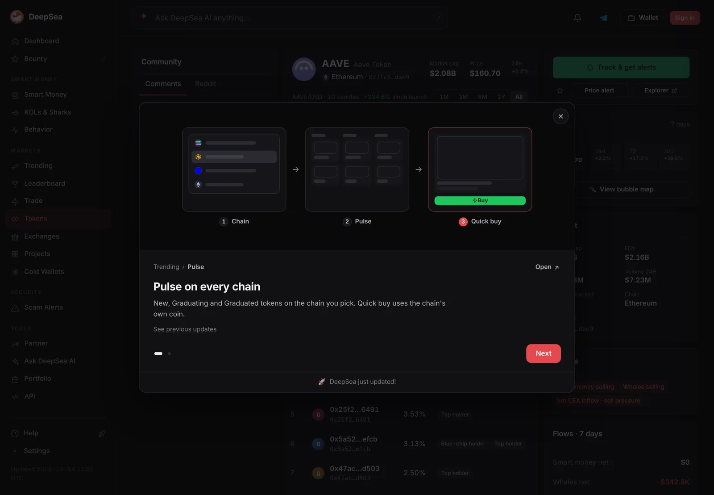
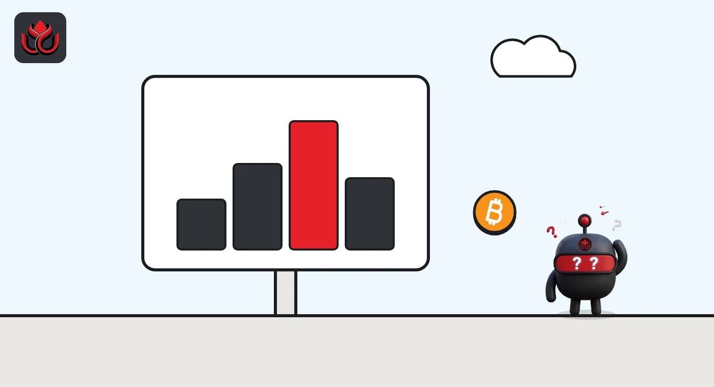

Native bitcoin as Aave collateral? Babylon's plan starts with a 300 BTC cap
Babylon Labs wants Aave V4 to accept bitcoin that never leaves the Bitcoin chain, with no wrapper or custodian. Aave Labs says the integration works and LlamaRisk has set a 300 BTC starting cap, but a Snapshot vote is still to come.
Key points
- Babylon Labs proposed on October 14, 2026, that Aave V4 accept native bitcoin, locked on the Bitcoin chain itself, as collateral.
- LlamaRisk's October 23 settings: a 78% collateral factor, a 300 BTC starting cap, and loans in USDT, USDC, GHO and WBTC.
- Aave Labs said the design works with Aave V4. A Snapshot vote and an onchain AIP are still needed before launch.
 What DeepSea's data shows
What DeepSea's data shows
DeepSea showed AAVE at $132.09 on November 2, with a market cap of $2.04 billion and a 30-day gain of 39.6%. Over seven days, whales were net sellers of about $152,600, and $17.14 million of AAVE moved to exchanges.
Native bitcoin collateral would add a new kind of borrower to a busy lending market. Across the DeFi lending wallets DeepSea tracks, its Lending & Credit page counts 913,268 borrowing wallets, of which 15.9% have been liquidated at least once. DeepSea does not break these figures out by protocol.

Data: DeepSea (desea.io), checked November 2, 2026, 7:58 a.m. ET.
What Babylon is asking for
Babylon Labs posted a request for comment on Aave's governance forum on October 14, 2026. It asks the Aave DAO to accept native bitcoin as collateral on Aave V4, the newest version of the lending protocol.
Today, using bitcoin on an Ethereum lender usually means a wrapped token such as WBTC, where a custodian or a bridge holds the real coins. Babylon's pitch is different. Under its Trustless Bitcoin Vaults (TBV) design, a borrower locks BTC in a special output on the Bitcoin chain. The coins are not wrapped, bridged or handed to a custodian, the proposal says.
Several delegates posted support on the first day. On October 22, after two internal review rounds, a check by an outside researcher and a Certora review, Aave Labs said the integration "works as intended with Aave V4." It left the risk settings to LlamaRisk, one of Aave's paid risk providers, which published them on October 23.
How the vault works
The mechanics, per Babylon's post:
- Lock: the depositor locks BTC in a Taproot output on Bitcoin. The vault provider, keepers and challengers pre-sign the transactions that can later move it.
- Mirror: the depositor activates the vault on Ethereum. Aave only takes ERC-20 tokens, so an adapter mints a token that cannot be freely transferred and stands for the locked BTC. It is burned on exit, so its supply should match the bitcoin locked.
- Exit: Ethereum logic releases the vault on withdrawal or liquidation. A claimer posts a claim backed by a zero-knowledge proof, and challengers have a window of several days to block a bad claim.
- Failed setup: if activation fails, the depositor can take the BTC back after a timelock.
Liquidations take a whole vault at a time. A vault keeper can liquidate and redeem the BTC directly. There is also an open route: a new BTC Vault Swap Spoke buys the seized vault with WBTC borrowed from an Aave hub, and arbitrage traders later repay that debt and redeem the bitcoin.

The caps and limits LlamaRisk proposed
LlamaRisk's parameter recommendation, posted in the proposal thread, puts the asset in a new Babylon hub with its own lending spoke. Native BTC would be collateral only and could never be borrowed, on any spoke.
- Collateral factor: 78%, so $100 of BTC would back up to $78 of loans.
- Maximum liquidation bonus: 5.55%.
- Supply cap: 300 BTC to start.
- What borrowers can take out: USDT and USDC (5 million each), GHO (1 million) and WBTC (100).
Aave's Core hub would also open credit lines to the Babylon spoke, shown below. Stablecoin rates would stay near zero at low use and climb steeply once 92% of the money is lent out (80% for WBTC). Bitcoin's price would come from a Chainlink BTC/USD feed. LlamaRisk said caps should rise with demand, subject to DAO approval. Babylon's proposal says the full risk parameters will be set out in the final AIP. A separate LlamaRisk assessment adds tighter limits per vault: 0.1 to 20 BTC each, and no more than 200 BTC per position or per address.
Proposed credit lines from Aave's Core hub to the Babylon spoke
million tokens
Source: LlamaRisk reply in the Aave governance forum ARFC thread, October 23, 2026
Who holds the keys
Control is split. The Aave DAO would control the Babylon spoke and the hubs and is planned to hold a pause role on the adapter contracts. Settings for the BTC Vault Swap Spoke would sit with a 2-of-3 multisig of Aave Labs, LlamaRisk and Babylon Labs.
On Babylon's side, the team said on October 16 that its vault system runs under an interim 4-of-7 Safe, with a 3-of-5 emergency guardian on which Aave Labs and LlamaRisk hold seats. Pauses take effect at once. Upgrades and configuration changes wait five days.
The code has been audited by Coinspect, Sherlock, Zellic, ABDK, ZK Security and Runtime Verification, the proposal says, and re-audits are in progress. LlamaRisk reported no critical findings and noted a $500,000 Sherlock bug bounty, but still recommended an independent proof of reserves.
On money: the first $500,000 of qualifying revenue each year would go to the Aave DAO. Above that, revenue is split in bands between the DAO and Babylon, and part of it funds open-market purchases of AAVE and Babylon's BABY token.
Who is skeptical, and why
Not everyone is convinced. One forum user, posting on October 19 and 20, questioned whether TBV is meaningfully different from tBTC v2, an older bitcoin bridge, and called it a bridge too. Another delegate asked on October 16 who holds the vault system's governance keys and why pauses have no timelock. Babylon answered the same day.
The design rests on Babylon's BaBe research, laid out in a paper the team says is set to appear at the CCS 2026 security conference. The Aave code changes are public in a pull request on Aave V4's GitHub.
Timeline
Babylon Labs posts the ARFC on Aave's governance forum
Babylon answers questions on its governance keys and pause timelock
A forum critic calls the vault design a bridge
Aave Labs says the integration works as intended with Aave V4
LlamaRisk publishes caps, credit lines and rate curves
Snapshot vote, then an onchain AIP
LC Insight analysis
This section is our reading of the facts above, not a statement of fact.
- We think the 300 BTC cap is the real story. It is a test size next to the wrapped bitcoin Aave already lists, and it lets the DAO see how whole-vault liquidations behave before it takes on more.
- The likely weak point is liquidation speed. Seizing an entire vault and waiting out a challenge window of several days is slower than selling WBTC, so the WBTC swap route and the keeper set will matter most in a sharp bitcoin drop.
- If it passes, the trust question moves from a custodian to multisigs and challengers. Readers should weigh the 4-of-7, 3-of-5 and 2-of-3 key sets as carefully as they once weighed WBTC's custodian.
What's next
- Whether the Snapshot vote opens and how much AAVE turns out
- The full risk parameters, including the liquidation threshold, which Babylon says will come in the final AIP
- Whether an independent proof of reserves is live at launch
- How fast the 300 BTC cap fills, and any request to raise it
Disclaimer. This article is based on public information and the sources listed below as of the update time shown. It is for information only and is not investment, legal or tax advice. Figures may change as companies and authorities publish new data.
Sources
- Aave governance forum, [ARFC] Onboard Native BTC as Collateral to Aave V4 via Babylon Trustless Bitcoin Vaults (October 14, 2026)
- Aave governance forum, LlamaRisk, Babylon Native BTC on Aave Ethereum Assessments (October 23, 2026)
- Aave governance forum, [Temp Check] Babylon Trustless BTC Vault Integration on Aave V4
- Aave V4 GitHub, Babylon Spoke pull request
- Babylon, BaBe research paper (IACR ePrint 2026/065)